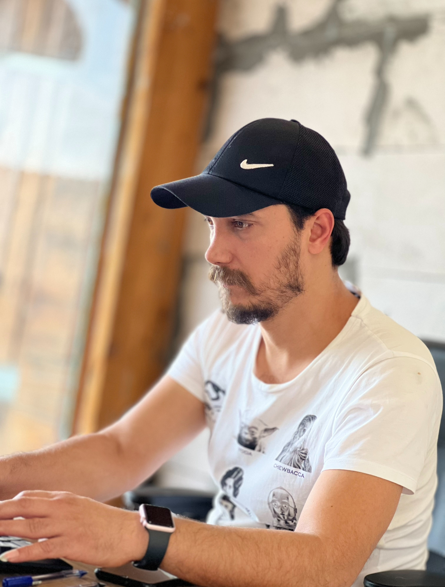
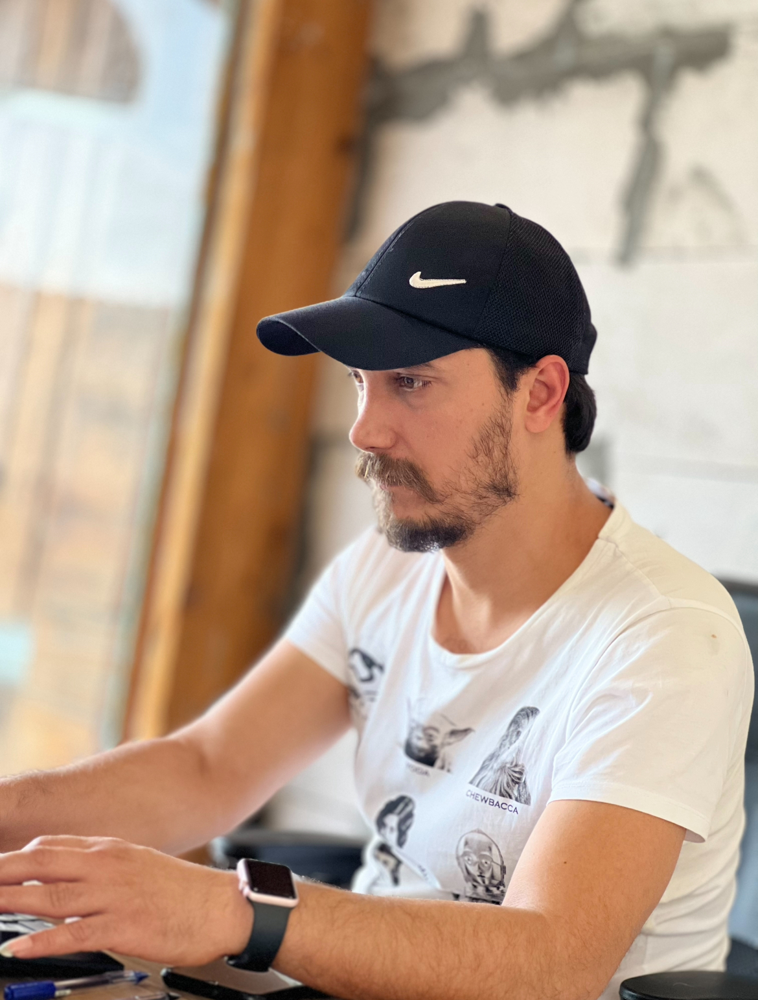

درباره من
فرزاد قاسمیان، بنیانگذار برند HamiPos، فعال در حوزه فناوری اطلاعات، نرمافزارهای حسابداری ویژه رستورانها و کافهها، و پشتیبانی تولید در پروژههای سینمایی.
فعالیت رسمی از سال ۱۳۸۲ تاکنون در بیش از ۲۰۰ مجموعه رستورانی، کافه و شیرینیفروشی.
نمونه رستورانهای شناختهشده: رناتو، برگر بار، خوان، برادران، فرزین، کباب ترش، آبدزاده، سریکا...
About Me
Farzad Ghasemiyan, founder of the HamiPos brand, active in IT, restaurant and cafe accounting software, and film production support.
Officially active since 2003, with experience in more than 200 restaurants, cafes, and pastry shops.
Well-known restaurants: Renato, Burger Bar, Juan, Baradaran, Farzin, Kabab Torsh, Abedzadeh, Serica...